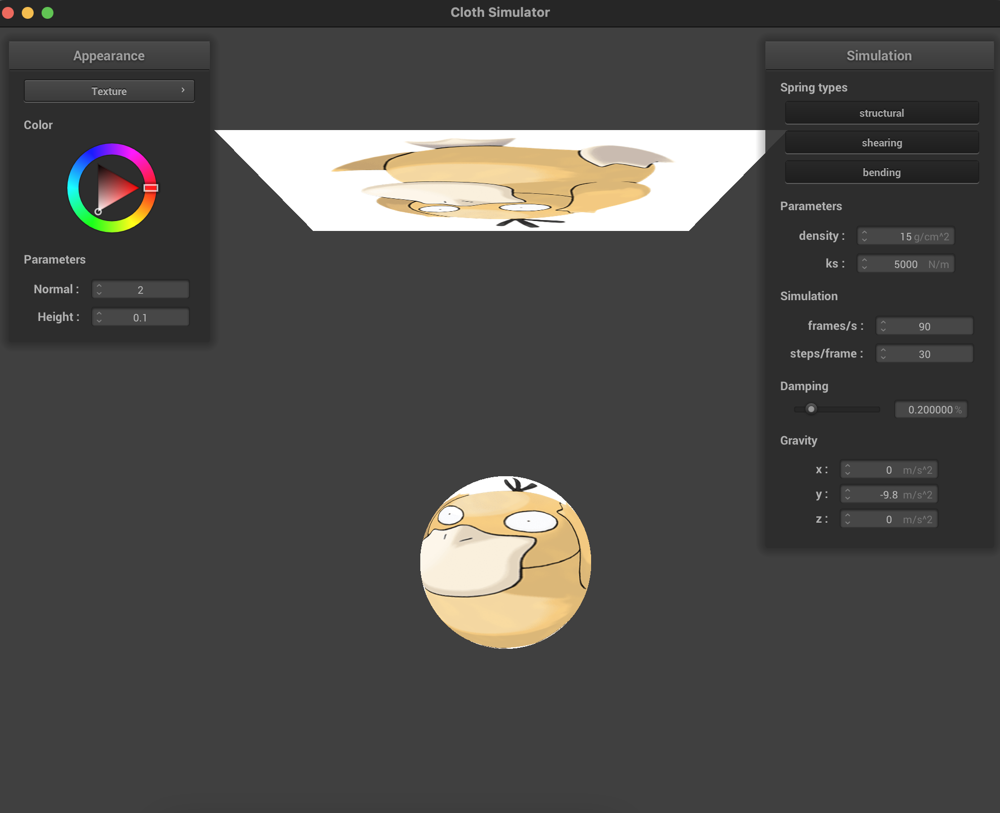
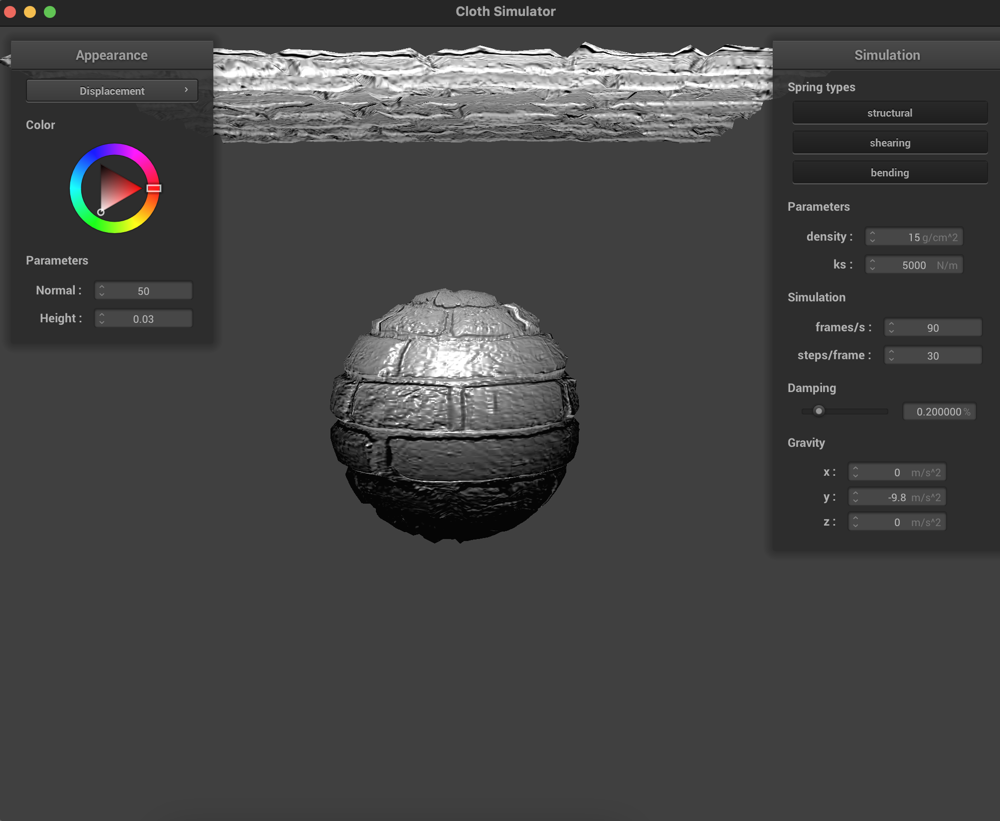

Overview
In this project, I implemented a real-time cloth material simulator. The cloth material
is modeled as a 2D grid of pointgs masses, as well as springs connecting the masses.
Physical simulation of the cloth involves computing the motion of each point, which is
governed by the cumulative effect of the cloth's many spring forces as well as external forces
like gravity. In the simulator, I also handle collisions between the cloth and other
objects in the scene. In this last section of this project, I wrote several
OpenGL shader programs to take advantage of accelerated, parallel graphics shading.
Part I: Masses and springs
The cloth data structure consists of a grid of point masses connected by a lattice of
springs of three types: structural, shearing, and bending. The cloth also has a "pinned"
list of vertices that should not move in the simulation, regardless of the forces applied
on them. Structural and shearing springs apply a resistance force to compressing or
stretching in the plane of the cloth. Bending springs resist changes to the cloth's shape
outside of its plane. Each spring exerts a force (Hooke's Law) on the two points at its two ends.
|
Cloth wireframe, all spring constraints
|
|
Structural springs
|
|
Shearing springs
|
Part II: Simulation via numerical integration
In this section, I took the spring forces mentioned above, and used Verlet Integration to update the (x,y,z) position of each
point mass in the cloth at each time step. The position update routine also adds
the contraint that springs cannot extend more than 10% past their rest length. During the
simulation, I also tweaked various cloth parameters and observed the outcomes:
a. Spring constant ks - Higher values for ks result in stiffer springs and a more rigid
cloth overall. Lower values for ks result in more flexible springs and a more malleable
cloth.
|
Higher ks=50,000 N/m, stiffer springs
|
Lower ks=5,000 N/m, more flexible springs
|
b. Density - When the cloth's point masses have high density, they experience stronger
forces from external sources of acceleration (F = ma), like gravity. Less dense cloths
are less susceptible to external accelerations.
|
Higher density=15 g/cm^3, higher force from gravity
|
Lower density=1.5 g/cm^3, lower force from gravity
|
c. Damping - The damping value affects whether the point masses in a cloth simulation
will come to rest, and if so, how fast that happens. Higher damping values simulate
more loss of energy (through friction, heat, etc.), and result in cloths coming to rest
faster. Low damping values cause more energy to persist in the cloth, which can be observed
by oscillations in the point masses.
|
Higher damping=20%, comes to rest more quickly
|
 Lower damping=2%, swings back and forth for longer, more ripples seen in point masses
Lower damping=2%, swings back and forth for longer, more ripples seen in point masses
|
Shaded cloth pinned at 4 corners, in its final resting state
Part III: Handling collisions with other objects
In this part, I added logic to handle collisions between the cloth and other objects
in the scene, like spheres and planes. In order to do this, the simulation tries to
"collide" each point mass in the cloth with every other object in the scene. For a
sphere, a collision is found when the point mass's position is within the sphere, in which
case a correction vector is computed, and the point mass's position is updated to
lie just outside the sphere at the tangent point. For planes, my logic detects a collision
when the point mass's position and last_position are on opposite sides of the plane,
indicating that it crosses through during the current time step. Similar to spheres,
my logic computes a correction vector to push the point mass's position back across the plane.
|
Sphere collision initial
|
Sphere collision resting
|
|
Plane collision initial
|
Plane collision resting
|
Part IV: Handling self-collisions
Up next, adding logic for self-collisions! The previous part did a good job of realistically
colliding the cloth with other objects, but in certain simulations the cloth still displays
weird behavior when falling onto itself or folding on itself. The naive solution for self-collisions
loops through all pairs of point masses, and performs a modifying force between them if they're close
enough together. For real time simulations, however, this O(n^2) approach is too slow.
To speed up the algorithm, we take advantage of the fact that self-collisions only happen for
point masses that are near each other in 3D space. My implementation subdivides the simulation's
3D space into a volumetric grid, and then hashes each point mass into its corresponding bin.
Now, a point mass only needs compute collision correction vectors for the neighbors found in
its spatial map.
|
Self collision t0
|
Self collision t1
|
|
Self collision t2
|
Self collision t3
|
Below, observe how varying the cloth density as well as spring ks affects the
behavior of the cloth as it falls on itself. For spring constant ks, higher values
lead to stiffer springs and thus bigger curves when the cloth falls. For cloth density,
higher density leads to the cloth folding on itself closer to the center, whereas a lower
density cloth will fall in an off-centered fashion due to its lighter weight.
|
Mid fall with low ks=5000 N/m
|
Mid fall with high ks=500000 N/m
|
|
Resting with high density=15 g/cm^3
|
Resting with low density=1.5 g/cm^3
|
Part V: Shaders
Exhaustive raytracing is known to be a rather computationally expensive way to do lighting and shading.
Shader programs in GLSL offer a cheaper alternative to rendering realistic lighting, textures, and materials.
Shader programs consist of two parts, a vertex shader and a fragment shader. A vertex shader assigns vertex attributes
and transforms the scene to normalized device coordinates. The fragment shader is responsible for
assigning a vector (R,G,B,alpha) to every pixel in the display using interpolated vertex data.
Fragment shaders can also manipulate vertex attributes data to yield different material effects.
The Blinn-Phong shading model combines 3 types of light distributions:
1. Ambient light - light intensity that reflects uniformly off of all objects
2. Diffuse light - surface normals that point closer to the light source have higher intensities, and
surface normals that point away from the light source tend to be shadowed.
3. Specular light - combines light sources, surface normals, and camera position to produce areas with
a glare / reflection effect
|
Ambient Lighting
|
Diffuse Lighting
|
|
Specular Lighting
|
Full Blinn-Phong Lighting
|
Texture Mapping!
|

Falling texture t0
|
Falling texture t1
|
Bump Mapping!
|
Bumpy t0
|
 Bumpy t1
Bumpy t1
|
Displacement Mapping!
|

Displacement t0
|
Displacement t1
|
Num samples vs coarseness
As it can be seen below, bump mapping seems to do better for 16x16 sampling,
as the 16x16 displacement map yields weirdly shaped edges. At 128x128 sampling, however,
displacement mapping does better at capturing the details of the textures, since the
sampling rate is high enough for the surface displacements to match the high frequency
content in the texture.
|
Bump 16x16
|
Bump 128x128
|
|
Displacement 16x16
|
Displacement 128x128
|
Mirror Shading